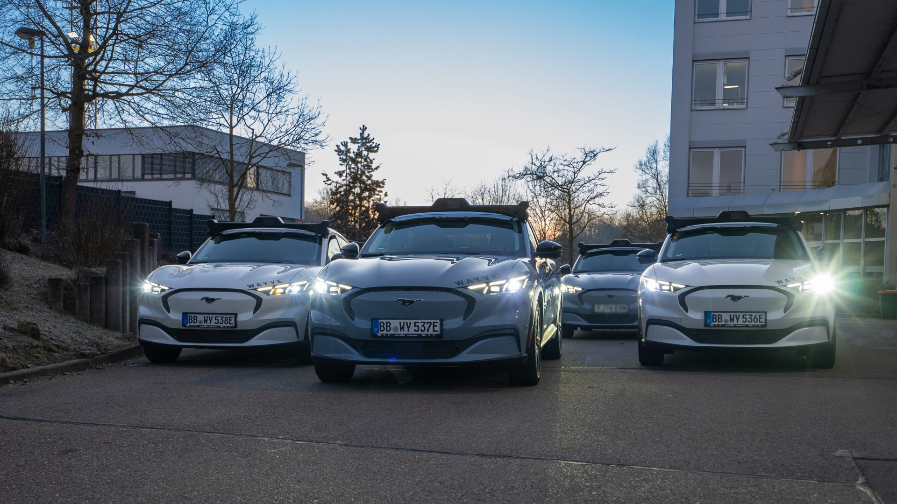
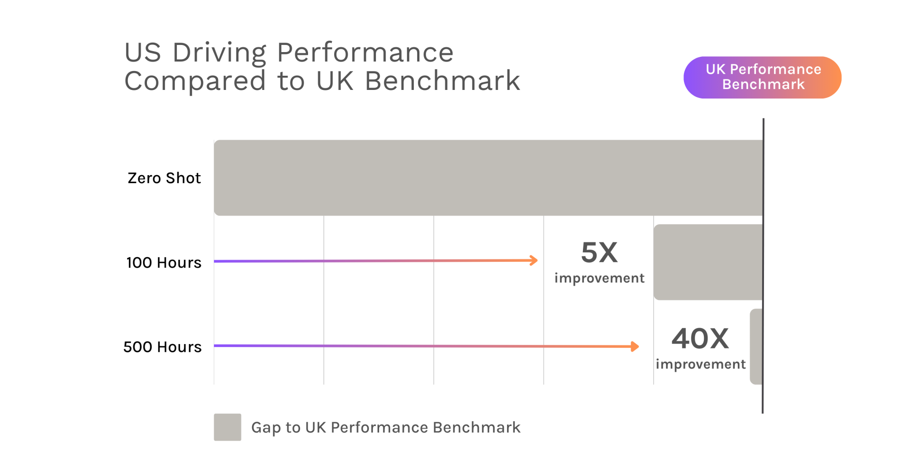
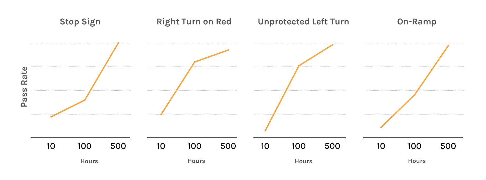
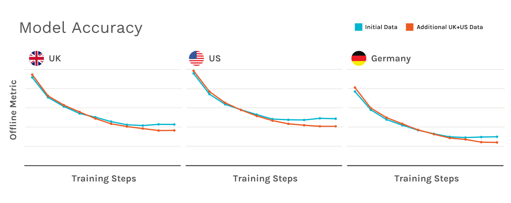
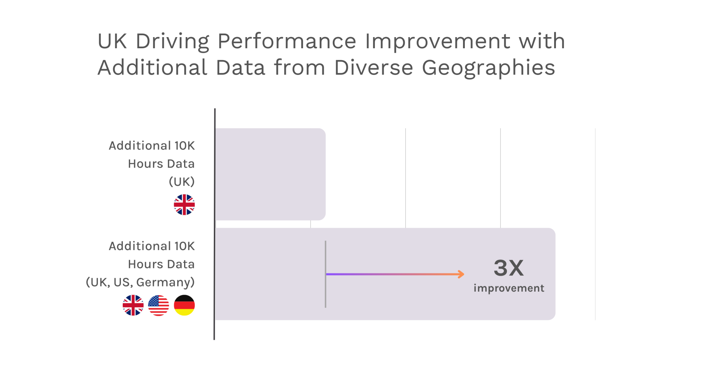
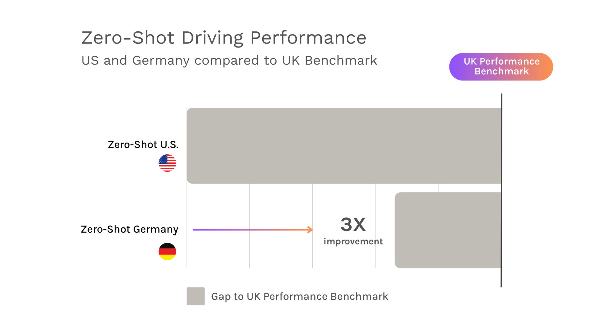
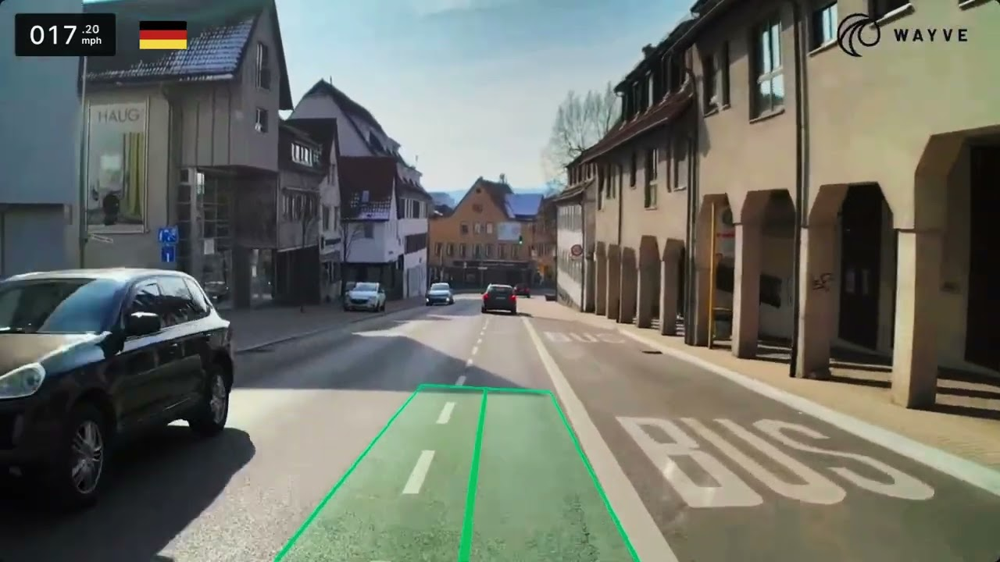
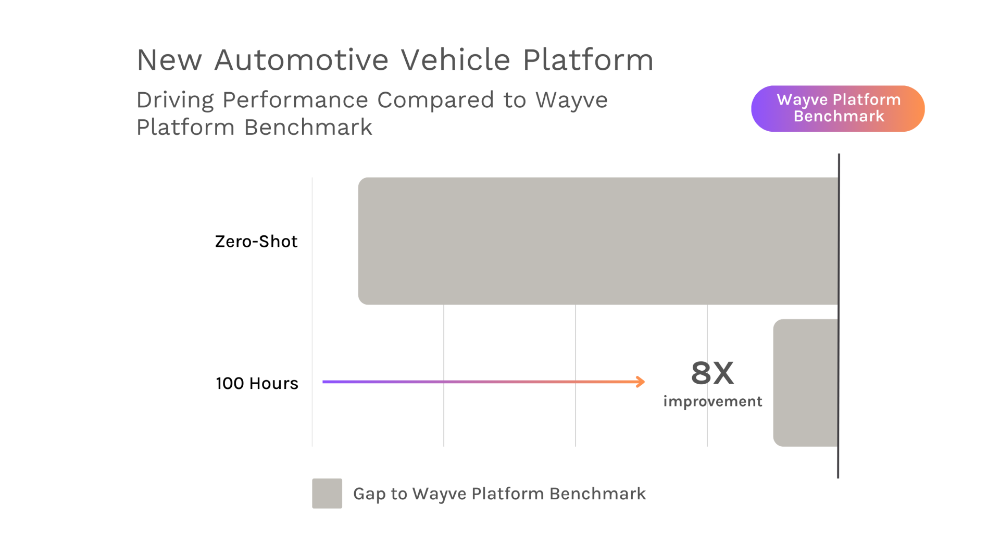

WayveのUS・ドイツへの展開は、AV2.0が最小限のデータで新しい運転環境に素早く適応できることを実証しています。本ブログでは、Wayveのファウンデーションモデルがさまざまな地域と車両プラットフォームにわたって汎化する様子を示す実世界の結果を紹介し、真にグローバルなAIドライバーというビジョンの実現に向けた進歩を強調します。

WayveのUSへの展開は、単なる地理的なマイルストーンにとどまらず、私たちのAV2.0アプローチによる自動運転の重要な実証です。グローバルな多様なデータで訓練されたファウンデーションモデルを基盤に、私たちのエンボディドAIは最小限の追加データで新しい地域や車両プラットフォームに適応し、従来の自動運転システムよりはるかに高いスケーラビリティを実現しています。
本ブログでは、Wayveのファウンデーションモデルがいかに新しい地域や車両プラットフォームに汎化するかについて、実世界の結果を紹介します。具体的には、以下の知見を提示します：
多くの従来型自動運転システムにとって、右ハンドル（英国）から左ハンドル（米国）への移行は大きな課題となる可能性があります。道路の位置、交通の流れ、交差点のダイナミクスにおける地域的な違いを考慮するため、認識、予測、制御に至るまで、運転スタック全体を大規模に再設計する必要があることがよくあります。これらのシステムは詳細なマップから導出された地域固有のロジックに依存しているため、新しい場所への自動運転技術の拡張はコストがかかり、手間のかかるものになります。
WayveのAV2.0アプローチは根本的に異なります。私たちのエンボディドAIが異なる市場や車両に迅速にスケールできる能力は、ファウンデーションモデルによって支えられています。このモデルは、内部フリートとデータパートナーからの広大なペタバイト規模のデータセットで訓練されたエンドツーエンドのディープラーニングアーキテクチャです。ユニバーサルバックボーンとして機能するこのモデルは、豊かで転用可能な運転行動をエンコードし、AIがどこでも運転できるようにブートストラップします。汎化（Generalization）として知られるこの適応性により、学習した知識を見慣れない運転状況に適用することができます。
以前、私たちは英国で汎化を実証しました。そこでは、エンボディドAIが最小限の追加データで異なる都市や車両プラットフォームにシームレスに適応しました。しかし、新しい国への適応——具体的には英国の右ハンドルから米国の左ハンドルへの移行——はより大きな課題をもたらしました。
この適応性を測定するために、私たちは英国レベルのパフォーマンスに達するために必要な新しい米国固有データの量を分析しました。結果は驚くべきものでした：8週間で収集したわずか500時間分の追加米国固有データで、私たちのAIは英国のベンチマークに到達しました。図1に示すように、私たちはまず左ハンドル道路への事前の露出なしに米国でモデルをゼロショットシナリオでテストしました。最初はパフォーマンスが英国レベルに及びませんでしたが、100時間分の新しい米国固有データで訓練した後、5倍に改善しました。さらに400時間分の追加データ（合計500時間）で、モデルは40倍の改善を達成し、都市部と高速道路環境で英国と同等のパフォーマンスに到達しました。

図1. 500時間分の新しい米国固有データで訓練した後、英国レベルのパフォーマンスパリティに達した米国での運転へのモデルの適応を示しています。
この迅速な学習は、私たちのファウンデーションモデルがいかに新しい地域に汎化するかを浮き彫りにします。結果として、英国と米国の両方に展開可能な単一の運転モデルを導出することができます。以下の動画は、同じAIモデルがロンドンとベイエリアで私たちの車両を運転している様子を示しています。
全体的な運転パフォーマンスを超えて、私たちは4ウェイストップ、右折オンレッド、無保護左折、短い合流レーンでのフリーウェイ合流など、米国固有の運転行動をモデルがどれほど迅速に学習するかも検証しました。これらの行動は、国間の道路インフラと交通パターンの主要な違いを反映しています。例えば、英国では一時停止標識はほとんどなく、無保護左折は逆方向の交通の流れに従います。米国固有の追加データを使ってモデルを微調整することで、道路インフラの違いだけでなく、地域の運転文化のような暗黙の規範にも適応しました。これらは手動でプログラムするには繊細すぎることが多いものです。
仮想の「オフロード評価」を使って、これらの新しい行動能力を学習するために必要な追加サンプルデータ量をテストしました。新しい訓練データ量が10時間から500時間に増えるにつれて、図2に示すシナリオ合格率の向上が示すように、オフロードパフォーマンスが改善しました。特に、モデルは100時間分の追加サンプルデータ内で強い改善を示し、500時間まで継続的な改善が見られました。

図2. 新しい領域固有データにより、新たに学習した行動能力が急速に改善したことを示しています。
Wayveのファウンデーションモデルは、広範囲のラベルなしデータから独自に学習します。これにより、収集コストが高くそのため希少なセンサーリッチなAVデータのみに依存するという制限を超えることができます。代わりに、内部フリートデータをフリートパートナー、自動車メーカー、その他のソースからの容易に入手可能なサードパーティデータセット（低品質の運転動画）で補完します。この柔軟性により、すべてを自分たちで収集することなく、グローバルな「データオーシャン」を構築でき、データカバレッジを指数関数的に拡大させます。
重要なことに、この多様なデータコーパスは継続的な改善のフライホイールを駆動します。すべての新しいドメインからの各新しいデータセットが、すべての運転シナリオにわたってファウンデーションモデルのパフォーマンスを強化し、強力なネットワーク効果を生み出します。モデルが以前の経験（すでに訓練されたデータ）を積み上げることで、新しい状況でより速く学習し、より効率的に汎化します。
これを説明するために、以下の結果を考えてみてください。2つの市場（米国と英国）のデータを追加すると、オレンジの線の低いロスカーブが示すように、モデルの精度が向上します。特筆すべきことに、この改善は両方の地域だけでなく、新たに導入される第3の市場にも及びます。これらのオフライン結果は、先週私たちが新しいテスト・開発ハブを開設する前に、ドイツでのパフォーマンス向上を予測していました！

図3. 英国と米国のデータを混合して訓練されたモデル（オレンジの線）は、ドイツなどの未見の環境を含むすべての地域でより低いロスカーブを示し、モデルの精度が向上していることを示しています。
この予測は実世界のテストでも実証されました。英国でのオンロードテストで同様のネットワーク効果が見られました：英国、米国、ドイツからの10,000時間分のデータをファウンデーションモデルに追加することで、英国のみのデータを同量追加した場合と比較して、3倍のパフォーマンス向上が得られました。

図4. 地理的により多様なデータで訓練した場合のモデルのオンロードパフォーマンスの相対的な改善を比較しています。
3番目の市場であるドイツでのテストを開始するにあたり、初期結果はゼロショットパフォーマンスにおける大きな飛躍を示しています。最初のUSへの展開と比較して、私たちのモデルはファインチューニングなしでドイツでの開始から3倍優れたパフォーマンスを発揮しました（図5）。

図5. 市場1から2（英国からUSへのゼロショット）、市場2から3（英国とUSからドイツへのゼロショット）への移行時のモデルのゼロショット性能を比較しています（追加の市場固有訓練データなし）。
これらの強力なゼロショット結果は、次の学習フェーズへの道を開きます。以下に、英国と米国での走行実績を持つ同じモデルが今やドイツの道路を走行している映像をご覧いただけます。雪道条件や高速アウトバーンを含む新しいドイツ固有データでの訓練によって、さらにパフォーマンスを洗練させることを楽しみにしています。

新しい市場への適応は汎化の一側面に過ぎません。私たちは、異なるセンサー構成を持つ新しい車両プラットフォームに適応するファウンデーションモデルの能力をテストしました——これはさまざまな自動車メーカーと連携するための重要なステップです。開発車両から新しい自動車プラットフォームへの移行において、100時間分の車両固有データが8倍のパフォーマンス改善をもたらすことがわかりました。これは地理的適応の知見と一致しており、クロスプラットフォーム展開には増分的な訓練のみが必要かもしれないことを示唆しています。

図6. 100時間分の新しい車両固有データで訓練した後、新しい車両プラットフォームへのモデルの汎化を示しています。
私たちのエンボディドAIが地域や車両にわたって迅速に汎化する能力は重要な突破口ですが、安全で自動車グレードの製品を開発するには、幅広い運転シナリオにわたる厳格な検証が必要です。これを効率的に行いデプロイを加速するために、私たちはデータ駆動のアプローチを採用しています——GAIA、PRISM、Ghost Gymなどの合成データ生成とニューラルレンダリングにおけるAIサイエンスのイノベーションを活用しています。これらの最先端の技術は高品質でフォトリアリスティックなシミュレーションを作成し、現実世界では何年もかかるような稀だが安全上重要なエッジケースに対してAIを徹底的にテストすることを可能にします。仮想と実世界のテストを組み合わせることで、AIが単に適応性があるだけでなく、証明可能に安全でグローバル展開の準備が整っていることを確保します。
これらの堅牢な検証能力を備えて、私たちはAV2.0をグローバルにスケーリングしています。英国から米国への成功した展開は、市場や車両プラットフォームにわたるAIの適応力を示し、より広範な展開への道を開きます。
展開を続ける中で、私たちの目標は変わりません：どこでも、あらゆる車両を操作できるエンボディドAIの開発です。多様なデータを活用することで、安全で適応性があり、スケーラブルな自律性を可能にする高度に汎化可能なAIを構築しています。データのネットワーク効果がこの進歩を加速させ——モデルのパフォーマンスを強化し、より速い適応を促進し、より広い汎化を可能にしています。
私たちの拡張はまだ始まったばかりです。AV2.0の発展を続け、先進支援運転および自動運転のためのエンボディドAIを現実のものとする取り組みを、引き続きご注目ください。